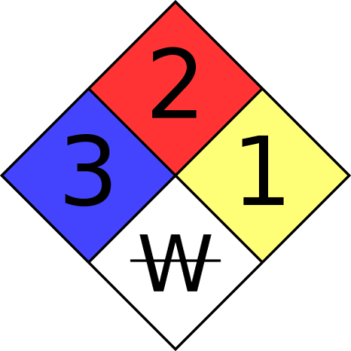

Safety in the LAB
Important terms/concepts
- MSDS
- PPE (personal protective equipment)
- Fire Diamond (see: https://en.wikipedia.org/wiki/NFPA_704)
- Reagent
- Aliquot
- Stock Solution
- EH&S (Environmental Health and Safety)
- Accuracy
- Precision
- Safety first - 'guilty until proven innocent'
- Reproducibility (consistency)
- Error and uncertainty
Some Questions
- What is the most important safety issue in the lab?
- What are some common safety mistakes in the lab?
- Why is food not permitted in the lab?
- What should you do if someone else is being unsafe in the lab?
Understanding Safety in the lab
One of the most important responsibilities in the lab is to conduct experiments safely. We owe it to ourselves and our colleagues to be sure that our experiments are conducted in a way that does not engager health. Importantly for our course we will not be working with chemicals, materials, or techniques that pose any significant threats. Nevertheless, 'sola dosis facit venenum'. We may at times work with open flames and sharp objects. It is important that every student make themselves familiar with possible safety risks and hazards. You may one day work in a laboratory (especially when doing independent research) where there are chemicals or instruments that do pose risks (even at school there are items in our storage that may be dangerous if mishandled). You must take responsibility, because you may not always be informed by others. To help us know how to understand these dangers we will consider the MSDS and Fire Diamond.
Basic safety rules
- Safety is everyone's responsibility - you are responsible for keeping safe and for speaking up if you see something unsafe.
- Know what PPE is required and when and review MSDS for unfamiliar materials.
- No food or drink in any laboratory settings.
- Never walk away from an open flame.
- Ask for help when you are uncertain.
Fire safety
Even if we don't work with flammable chemicals, it's important to know some rules.
Fire Diamond

The colors on the fire diamond all represent different things- red- flammability blue-health yellow- reactivity white- special notice
Tip: NEVER WEAR GLOVES WHEN WORKING WITH OPEN FLAMES Tie back hair and loose clothing as well.
Working with chemicals in the molecular laboratory
A basic understanding of chemistry is needed to work in the molecular biology laboratory. We need to understand how to work with the major solutions of our laboratory including buffers, gels, and other reagents. Most of our solutions are used at standard concentrations reported in Molarity (M). We often keep reagents as stock solutions, with are diluted to aliquots of working solutions. Understanding moles, concentration, and dilution - including the lab math needed to calculate recipes is a basic skill for working in the lab. We also need to know the tools we use to measure these solutions and how and when our measurement errors can be identified and compensated for.
Links
These links are very, very detailed. You can have a look but there is more information here than what we will use in class. These may be useful however for summer research experiences or your future college studies.